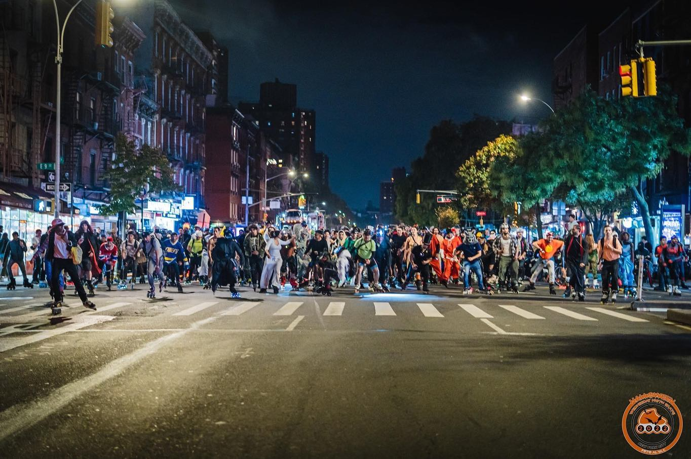
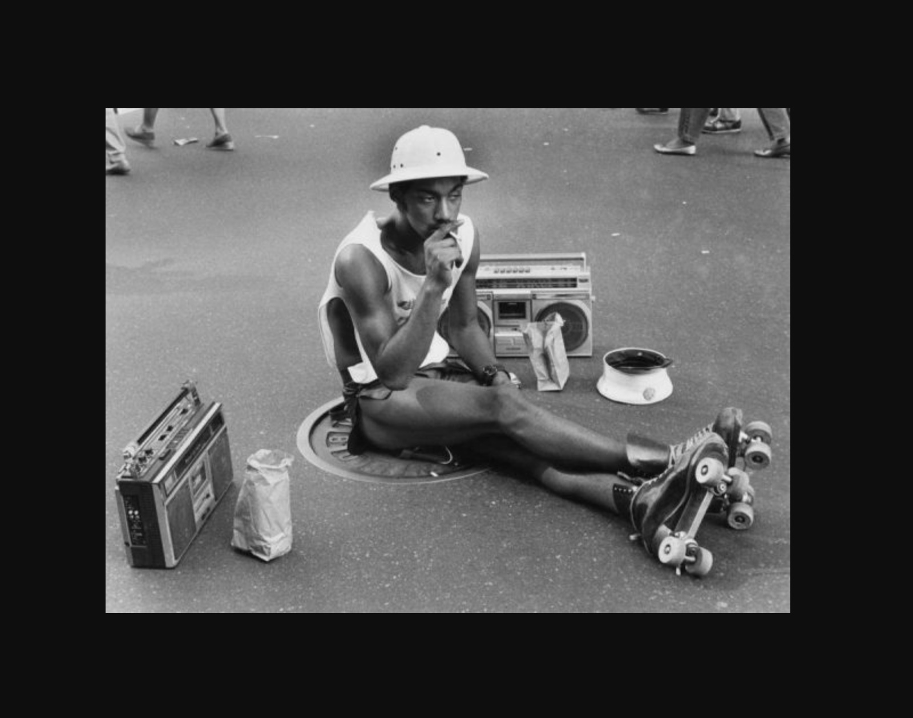
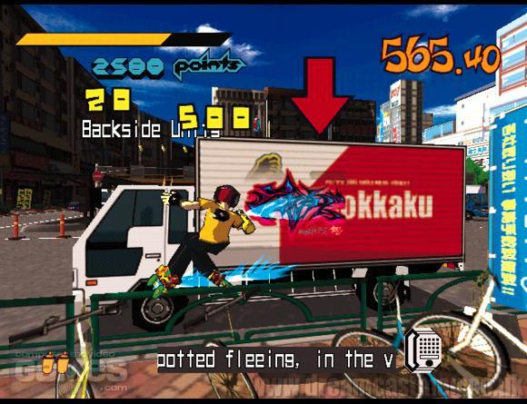
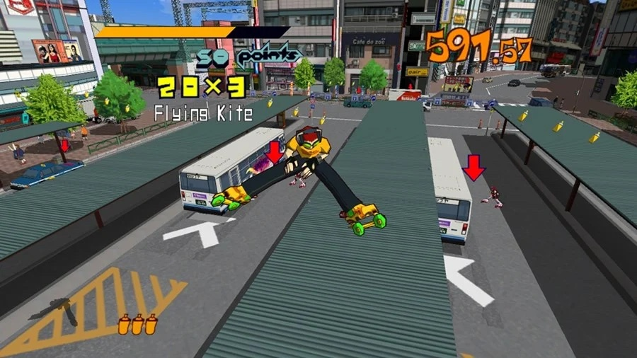

Roadskate is when a group of folks skate in groups on roads. The individual members of a pack use comparatively less energy than the lone skate traveling at the same speed.
Wednesday Night skate in NYC, is a group of street skaters in New York who have been meeting up for weekly group skates since 1996. Street Skating events really serves as a great tool for community building, and has recently been experiencing a revival.
Another popular aspect to outdoor skating is Park Skating. Skate parks were made most popular by skateboarding, and competitions based on tricks and moves. Roller Skating in parks utilizes movement of the skater with varying elements around the park. Many skateable objects are strategically placed to allow for free movement and exploratory practice.
  